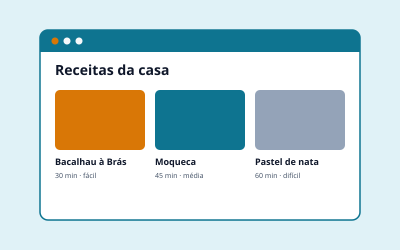
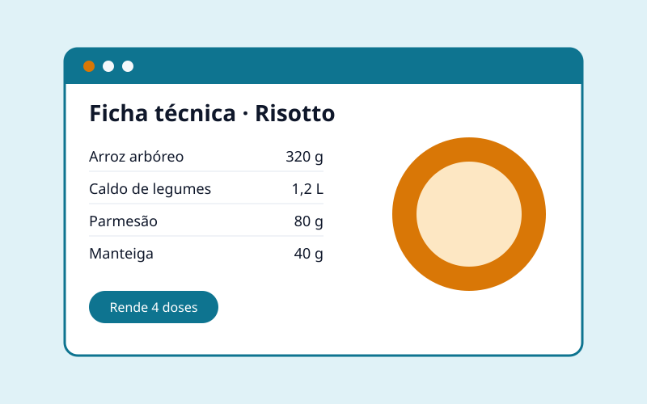
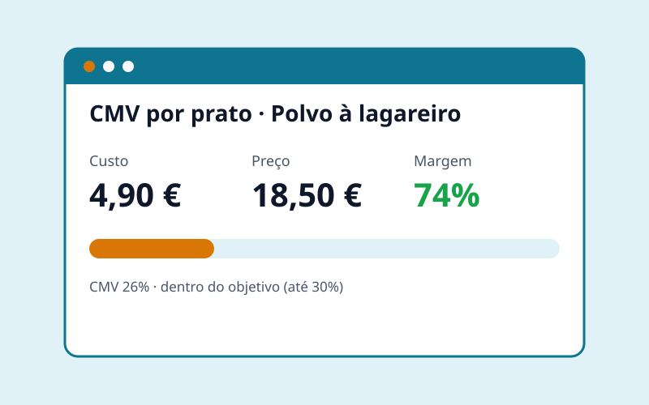
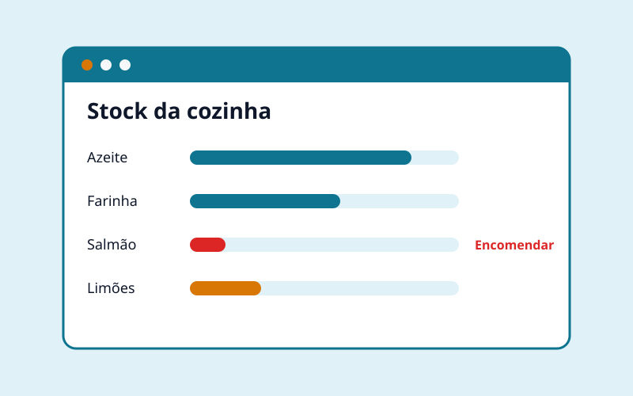
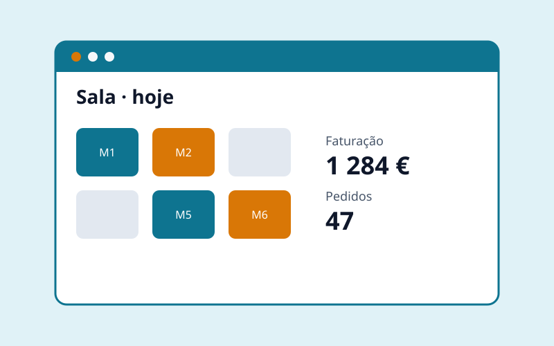
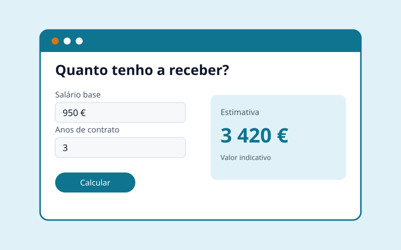

Full Stack Developer
Matheus Luna
I build web and mobile apps end to end, from the interface to the database. Before code I was a lawyer, a head chef and an audiovisual producer. That mix shapes how I work: listen carefully, solve fast and always think about the person who will use it.
- JavaScript
- TypeScript
- React
- React Native
- Node.js
- HTML & CSS
Póvoa de Varzim · Porto, Portugal
Available · on-site or hybrid
- Degrees and courses
- 4
- Years practising law
- 5+
- Kitchens in 2 countries
- 5
- Podcast studios
- 3
Where I come from
A career in four chapters
-
2013 – 2024 · Recife
Law
With a Bachelor of Laws and admitted to the Brazilian Bar (OAB/PE), I worked as an employment lawyer. I represented employees in claims and appeals and advised companies on prevention: employment contracts, HR policies and avoiding legal liabilities.
What I took from it: reading rules carefully, writing without ambiguity and listening to the client before proposing a solution.
-
2019 – 2026 · Recife, Olinda and Porto
Gastronomy
I graduated in Gastronomy and International Cuisine at SENAC and worked in five kitchens in Brazil and Portugal, from cook to head chef. I led teams, managed stock and purchasing, designed plate presentations and kept food safety standards in check.
See the 5 kitchens
- Oficina do Sabor · Olinda Cook · 2019–2020
- Meraki Poke · Olinda Head chef · 2020
- Arvo Restaurante · Recife Cook · 2020
- Agua Chill · Matosinhos Cook · 2024
- Rua Tapas · Porto Head chef · 2024–2026
What I took from it: working under pressure, leading a team and knowing a business's problems from the inside.
-
2021 – 2024 · Recife
Audiovisual production
I founded and ran Recreative Lab, a media studio with 3 podcast studios, 1 photo studio and a space for exhibitions, classes and cooking shoots. I handled all the technical side: cameras, audio, lighting, livestreaming with OBS Studio and editing in Premiere Pro.
See highlights
- Official broadcasts of the Pernambuco Women's Football Championship
- Brazilian Série D matches, including Santa Cruz
- Three international Confut events
- Veneza Cast, the podcast I created and hosted to give a stage to artists and entrepreneurs from Recife
- Podcasts, classes and events for companies
What I took from it: solving technical problems live, with no room for error, and thinking about who is on the other side of the screen.
-
2023 – today · Recife and Porto
Full Stack Development
I started as a freelancer, building websites and apps with React, React Native, TypeScript and Node.js. I completed the Web and Mobile Development programme at ISLA Gaia and I'm now specialising in Full Stack Development at Tokio School. My code is on GitHub.
The goal: build digital products that solve real problems for people and companies, in any industry.
Where I studied
Education
-
In progress
Full Stack Development
-
2024 – 2026 · Completed
Web and Mobile Development
ISLA Gaia · EQF level 5
-
2019 – 2021 · Completed
Gastronomy and International Cuisine
SENAC Pernambuco · EQF level 5
-
2013 – 2017 · Completed
Bachelor of Laws
UNIAESO Barros Melo · EQF level 6
What I'm building
Projects
I start with the industry I know from the inside: restaurants. The approach works for any business: understand the problem well and build the right tool.
-

CompletedRecipes website
My first project: semantic HTML, ingredient tables and a responsive layout.
HTML · CSS
-

In developmentRecipe cards
Every dish with ingredients, weights, method and a photo. No more stained notebooks.
React · TypeScript
-

In developmentFood cost calculator
Shows the real cost of each preparation and the margin per dish, so owners decide with numbers.
React · Node.js
-

PlannedKitchen management
Stock, supplier orders and waste control on one screen, on desktop or mobile.
React Native · Node.js · REST API
-

PlannedRestaurant management
Brings recipe cards, food cost and stock together in one platform for several restaurants.
React · Node.js · Database
-

PlannedEmployment rights simulator
Explains in plain language what an employee should receive when leaving a job. The lawyer in me, in code.
TypeScript · React
What I can do
Skills
Front-end
- Semantic, accessible HTML
- CSS: Flexbox, Grid, responsive
- JavaScript and TypeScript
- React and React Native
Back-end
- Node.js
- REST APIs
- Databases
- Git and GitHub
Beyond code
- Team leadership
- Stock and cost management
- Livestreaming and video editing
- Employment law
Languages
- Portuguese
- Native
- Spanish
- C1 (spoken)
- English
- B1 · writing C1
Let's talk
Contact
I'm looking for my next role as a full stack or front-end developer, in Porto, on-site or hybrid. I'm also open to freelance projects.